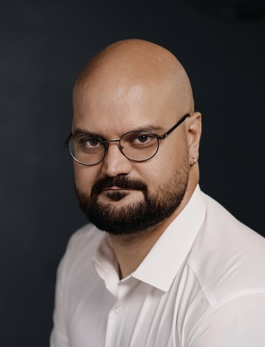

Опытный технический директор с 17-летним стажем, прошедший путь от разработчика до руководителя IT-направления. Глубокое понимание всех этапов создания ПО — от проектирования архитектуры высоконагруженных систем до написания и ревью кода. Технический стек включает Java, Spring, микросервисы, Kafka, Docker, Kubernetes, а также современные AI-решения (Generative AI, TTS/STT, AI в SDLC). Управлял командой разработки из 160+ FTE, масштабировал отдел с 40 до 160 человек, сократил time‑to‑market на 35% и увеличил прибыль по портфелю проектов более чем в 2 раза, а также вывел AI-продукты на новые рынки. Специализируюсь на стратегическом планировании, приоритизации бэклога, оптимизации бизнес-процессов и построении высокопроизводительных команд.
Лидер с сильными коммуникативными навыками, ориентированный на результат. Умею выстраивать доверительные отношения с командами и заказчиками, принимать решения в условиях неопределённости и быстро адаптироваться к изменениям. Убеждён, что ключ к успеху — сочетание стратегического видения и глубокого погружения в технические детали. Дополнительно веду образовательные проекты и выступаю на профильных конференциях. Ищу позицию CTO для масштабирования бизнеса через технологические инновации и эффективное управление.
Информационные технологии, разработка ПО, разработка устройств, фиджитал-инфраструктура, цифровые сотрудники
Задача: создать полностью автономного AI-агента для замещения или дополнения живого сотрудника в задачах консультирования, продаж и обслуживания.
Действие: разработал архитектуру и организовал процесс создания продукта с нуля, объединив мультимодальные AI-технологии и специализированное железо.
Результат: продукт работает в пилотах — 200+ АЗС (Лукойл, ГПН, Teboil), 15 ТЦ/БЦ, МФЦ в 5 городах, гостиницы, ведутся переговоры о масштабировании на федеральном уровне.
Навигационные киоски для ВДНХ — промышленная эксплуатация несколько лет.
Java, Spring, Go, C, Python, Node.js, PostgreSQL, MongoDB, SQLite, Docker, Kubernetes, Kafka, Redis, Prometheus, Grafana, GitLab CI, LLM (Qwen3, Giga AM v3), RAG (BAAI/bge-m3, BM25), TTS/STT, видеогенерация (LatentSync 1.5, LTX 2.3), PyTorch, vLLM, Ollama, React, Electron.
Ведущая IT-компания (1000+ проектов, 1500+ сотрудников), разработка ПО, системная интеграция, ИТ-консалтинг
Роль: Tech Lead → кризис-менеджер → Руководитель проекта (с 2019)
Задача: спасти проект на этапе кризиса (плохое состояние, риск потери заказчика).
Действие: провёл анализ стека, аудит кода, подбор новых методологий ведения проекта. Изменил процессы взаимодействия команды и приоритеты задач. Обеспечил защиту от DDoS-атак и других видов кибератак.
Результат: проект сохранён для компании; заключён договор о стратегическом партнёрстве; привлечены дополнительные проекты от заказчика (портфель вырос до 4 проектов); прибыль по портфелю проектов выросла более чем в 2 раза; разработана уникальная DevOps-платформа, создан новый медиа-ресурс с построенной с нуля CMS.
Задача: сократить издержки на сетап и поддержку проектов, обеспечить шаринг разработанных функциональных блоков.
Действие: разработал платформу для быстрой конфигурации проекта, автоматизации развертывания инфраструктуры, оформления доступов, создания базовых структур, подключения общих компонентов, формирование стандартного пайплайна, настройка линтеров и статанализа кода.
Результат: экономия для компании составила порядка 52 млн руб./год. Платформа использовалась в десятках проектов. Бюджет продукта — ~10 млн руб./год.
Кампус (2022–2024) — внутренний отдел обучения
Java, Spring (Boot, MVC, Data, Security, Cloud), Hibernate, JPA, Kotlin, Python, Node.js, REST API, GraphQL, gRPC, PostgreSQL, MySQL, Oracle, MongoDB, Redis, Hazelcast, Ignite, JUnit, Mockito, Cucumber, SonarQube, Docker, Kubernetes, Kafka, RabbitMQ, Prometheus, Grafana, ELK, Jenkins, GitLab CI, TeamCity, Ansible, AWS, Azure, Git, Maven, Gradle, IntelliJ IDEA, AI (Llama, Mistral, DeepSeek, OpenAI, GitHub Copilot, Cursor).
Образовательные учреждения, повышение квалификации, бизнес-образование
СМИ, маркетинг, реклама, PR, дизайн, издательская деятельность
Java, Struts, Ant, Oracle DB, JavaScript, HTML, CSS, jQuery, Android (Java), iOS (Objective‑C), REST API.
Контакты предоставлю по запросу.